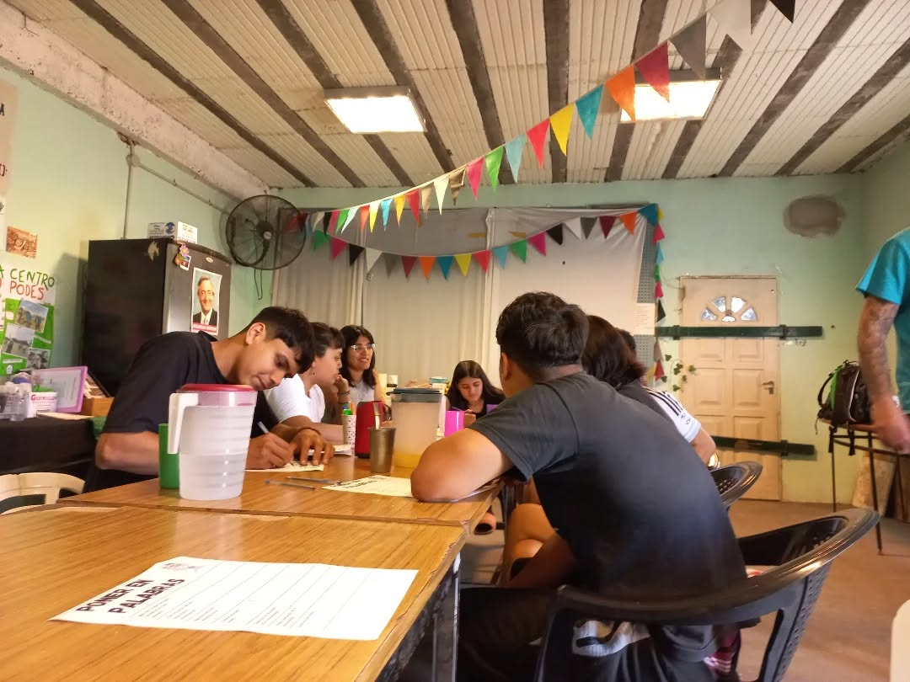
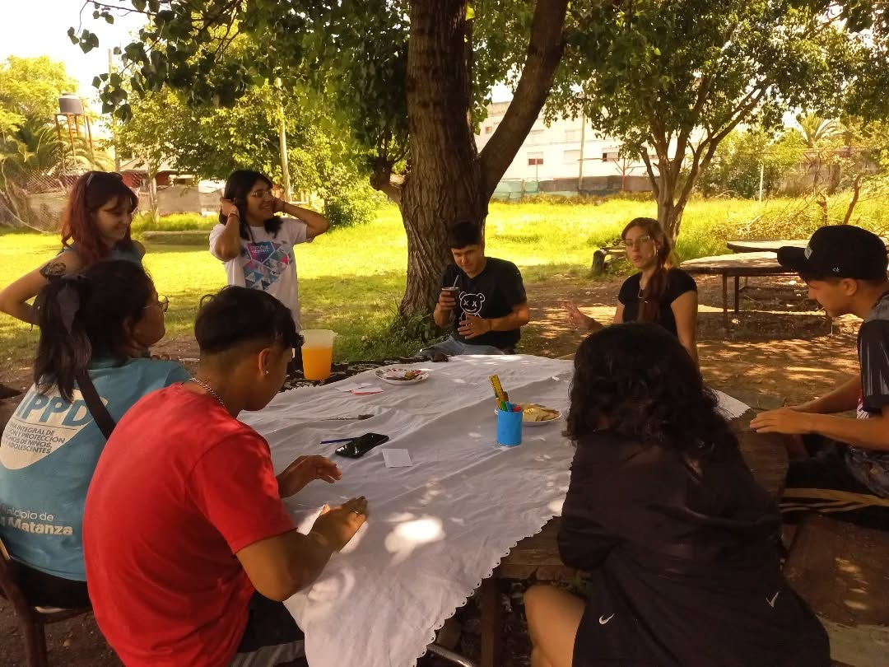
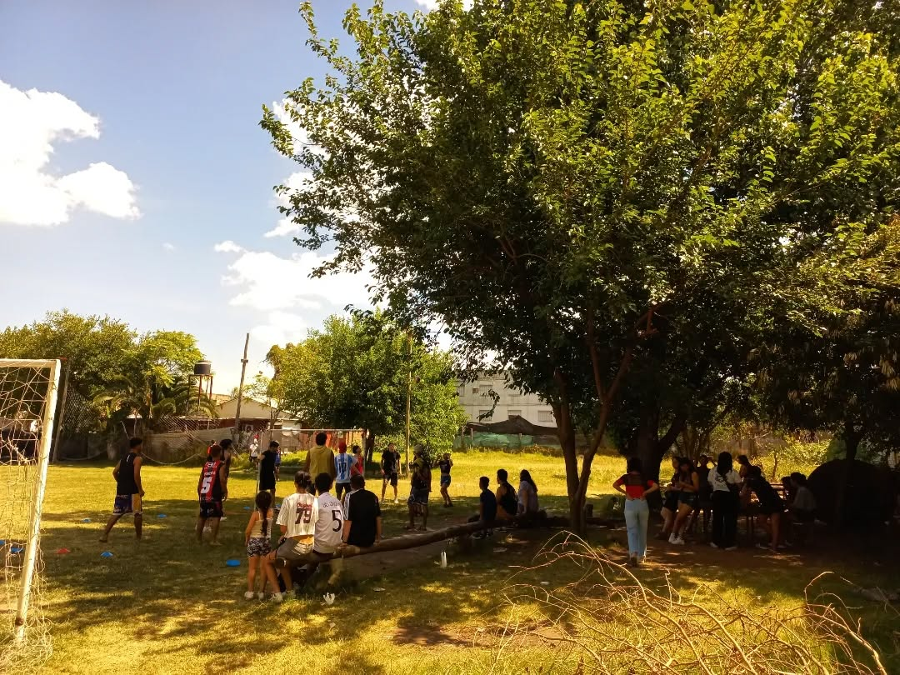
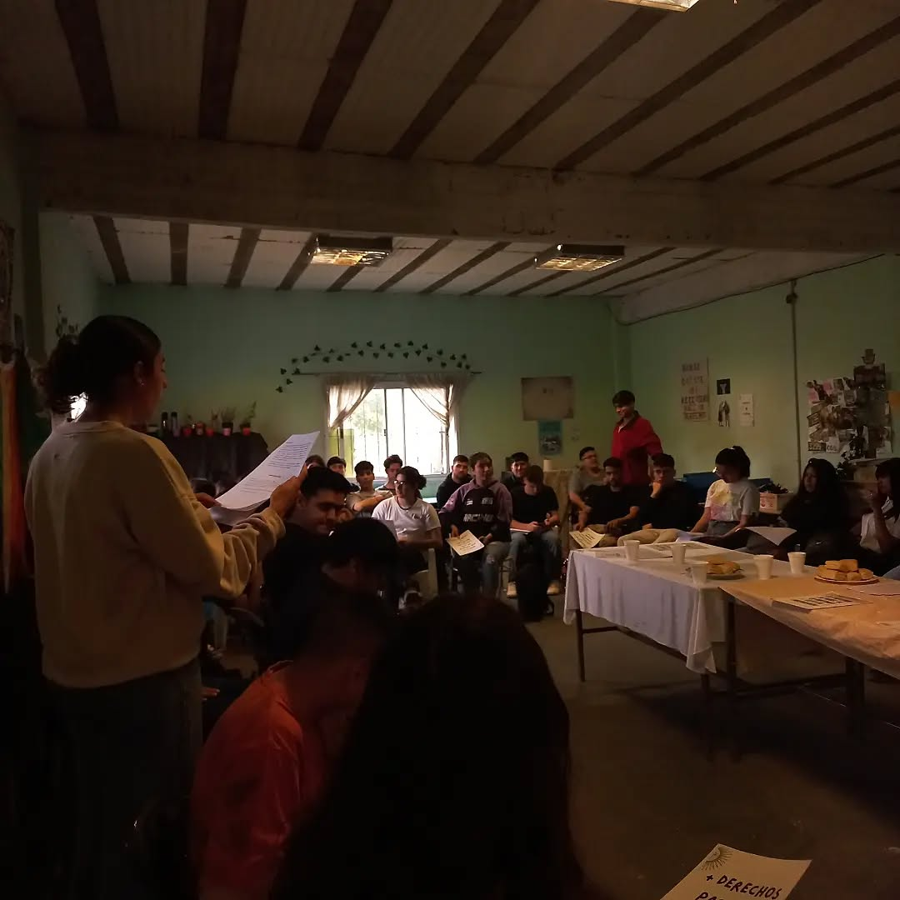

Nuestra Historia
Todo comenzó en 2015, cuando un grupo de vecinos notó que muchos chicos del barrio pasaban sus tardes en la calle sin actividades. Lo que empezó como una merienda en un garaje, hoy es Caminos de Barrio: un espacio de contención y aprendizaje donde más de 100 jóvenes construyen su futuro cada día.




Nuestra Misión
Acompañar a niños y adolescentes brindando apoyo escolar, talleres y contención para alejarlos de la calle o de cualquier situación vulnerable en al que se encuentre.
Nuestra Visión
Ser el centro barrial de referencia que logre que cada joven de la comunidad tenga un proyecto de vida digno.
Nuestros Valores
- Inclusión social
- Transparencia
- Trabajo en equipo
- Contanción
Quienes hacemos esto posible

Laura González
Fundadora y Coordinadora
Carlos "Charly" Díaz
Profe de Deportes
Ana Ruiz
Trabajadora Social
Miembros voluntarios
Nuestro Impacto en Números
0
Años de Historia
0
Chicos Asistidos
0
Voluntarios Activos